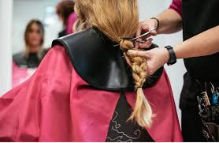

Donación de Pelo
Contribuye a la creación de pelucas para pacientes oncológicos.
Más informaciónDonación de Dinero
Contribuye económicamente a causas benéficas y proyectos solidarios.
Más información